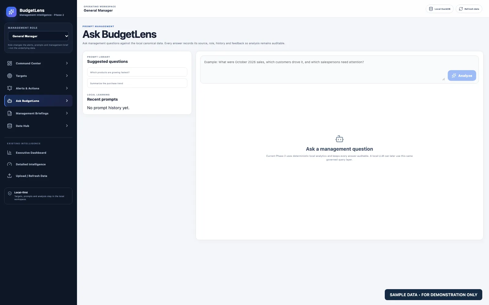

Export your everyday reports
Get sales, purchase and customer reports from the business system you already use.
Your existing system stays in placeUnderstand your sales, purchases and performance without sending sensitive reports to a cloud analytics service. BudgetLens reads, checks and analyzes your data right on your own system.
Processed on your systemBusiness analytics without a cloud dataset upload.
Think of BudgetLens as a helpful analyst installed on your computer. You don't need to change your ERP system or upload your business information to an online analytics platform.
Get sales, purchase and customer reports from the business system you already use.
Your existing system stays in placeSelect the files inside your installed BudgetLens application. It prepares and checks the information locally.
No cloud analytics upload requiredReview dashboards and, where configured, ask AI questions about your business using local analytics.
Your computer does the processingWhat does “upload a report” mean in BudgetLens? Simply choosing a file for the application to read locally. It does not mean uploading that file to an external cloud analytics server.
Your prices, sales, customer lists and purchasing costs are sensitive. BudgetLens is designed to keep the core analytical workspace within your own computer or company-managed environment.
No. The local workflow processes the reports you select on your own system, without requiring a central copy for cloud analytics.
On the device running BudgetLens. Preparing reports, calculating KPIs, and supported local AI processing happen in the local workspace.
Core local analytics can operate without a constant internet connection. Some account, login, activation and licensing activities need an online connection.
Your organization controls its own computer and business data. Access controls, software updates and backups are still important for keeping that environment secure.
Account administration, subscriptions and license management—not as the required destination for your full commercial dataset. This keeps product access management separate from business analysis.
BudgetLens separates cloud customer, subscription and license management from a local analytical workspace for ERP reports and dashboards. Supported AI analysis can use a locally installed model when configured. Security also depends on the customer's device, user permissions, updates and backup practices.
BudgetLens uses defined calculations on organized report data. AI helps you explore that information; it isn't asked to make up the numbers in your financial or sales dashboards.
Identify supported fields like dates, products, quantities and sales amounts—even when reports use different headings.
Standardize the data and flag missing information, inconsistent values and potential import problems.
Build sales, purchase and estimated gross-profit measures using consistent analytical rules.
Use the same governed analytical foundation for dashboards and supported AI questions.
Results depend on complete, accurate ERP exports, correct field interpretation and successful validation. BudgetLens can highlight issues, but it cannot guarantee that every source report is correct. Check critical decisions against your records.
Ask questions in everyday language. In a configured local AI deployment, Ask BudgetLens uses your locally prepared business information and the defined numbers behind your dashboards, instead of requiring you to paste confidential reports into an external chatbot.
Explore the AI workspace
Examples of business questions to explore—not simulated AI answers.
“Which customers drove our sales growth this month?”
“Which items are contributing the most to estimated gross profit?”
“Where should the team investigate changes in performance?”
AI capabilities and available question types depend on the configured deployment, underlying data and enabled features. Outputs should be reviewed for important business decisions.
Explore executive dashboards, sales and purchase KPIs, item and salesperson performance, AI analysis, and product administration—all in one compact tour.
A single management view of net sales, purchasing, target health, priority alerts, and recommended actions.
Actual BudgetLens interface captures using illustrative demonstration data. Modules and permissions vary by workspace and subscription.
From familiar sales and purchase reports, BudgetLens prepares dashboards and business views for everyday management reviews.
Select supported reports from your existing ERP. BudgetLens helps recognize and organize their information locally.
See sales, purchases, item-level results, customer patterns, salesperson KPIs and more in one workspace.
With the local AI setup enabled, ask business questions about the same governed information behind your dashboards.
The commercial case is straightforward: less repetitive reporting work, faster management visibility, lower dependence on custom BI development, and stronger control over sensitive operational data.
Replace repeated consolidation, spreadsheet preparation and management-pack assembly with reusable local analytics.
Leadership sees the same governed numbers across dashboards, targets, alerts and AI-assisted questions.
Sales, purchase, pricing and customer data can stay inside the company's own environment.
BudgetLens adds an intelligence layer above existing exports instead of forcing an ERP migration or large BI transformation.
Businesses with meaningful sales, purchase and customer volumes that still rely heavily on Excel or static ERP reports.
Companies that want modern analytics and AI assistance without routinely sending operational datasets to a third-party cloud platform.
Organizations where analysts spend too much time preparing numbers and too little time interpreting them.
Teams using ERPNext, SAP, Oracle, Odoo, Dynamics and similar systems where report exports are available but insight remains fragmented.
Connect real ERP exports, validate management KPIs, confirm the local deployment model and prove the operational value before a wider rollout.